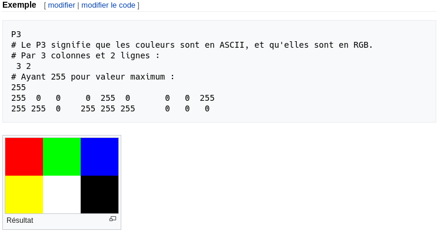
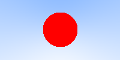
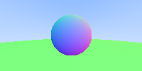
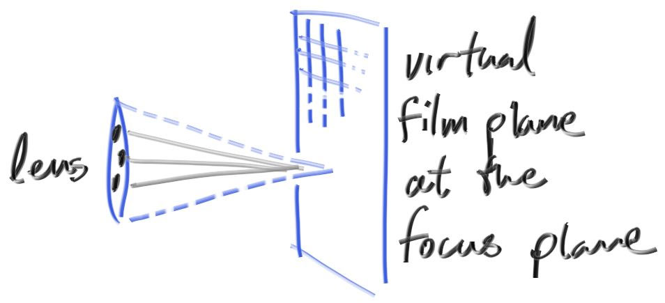

Introduction
Ce site est une traduction de l'excellente série de livres sur le raytracing de Peter Shirley. Le ray tracing, ou lancer de rayons en français, est une technique de calcul d'optique par ordinateur, notamment utilisée pour le rendu d'image de synthèse (source : Wikipedia). Cette traduction est rendue possible grâce au choix de l'auteur de publier ses écrits sous license permissive CC0 (anciennement payants).

Point de départ
J'ai enseigné pendant plusieurs années la programmation à destination de l'image. Souvent, j'enseigne le ray tracing (lancé de rayons), parce que vous êtes obligé d'écrire tout le code mais vous pouvez quand même obtenir des images super cools. J'ai décidé d'adapter mes notes de cours en manuel, pour que vous puissiez réaliser un programme cool, aussi vite que possible. Ca ne sera pas un moteur de rendu par lancé de rayons complet mais il sera capable d'illumination indirecte, ce qui a permis aux films de gagner en réalisme. Suivez ces étapes, et l'architecture du ray tracer que vous allez produire sera suffisante pour que vous puissiez construire un ray tracer plus complet par la suite.
Quand quelqu'un parle de "ray tracing", ça peut vouloir dire plusieurs choses. Ce que je m'aprête à décrire est techniquellement un "path tracer" assez général. Alors que le code que vous allez écrire est très simple (laissons l'ordinateur faire le travail !), je pense que vous serez très satisfait des images que vous pourrez créer avec.
Je vais vous expliquer comme coder un ray tracer dans l'ordre auquel j'ai été habitué à le faire, ainsi que quelques conseils de débogage. A la fin, vous aurez un ray tracer qui produira de belles images. Vous serez capable de faire ça normalement en un weekend. Si ça vous prend plus de temps, ne vous en faites pas. J'utilise le C++ comme langage de programmation, mais vous n'avez pas besoin de faire pareil. Cependant, je vous suggère de le faire, parce que le C++ est rapide, portable et que la plupart des moteurs de rendu de films et jeux vidéos sont écrits en C++. Notez que j'éviterai d'utiliser les fonctionnalités modernes du C++, mais l'héritage et la surcharge d'opérateur sont trop utiles aux ray tracers pour passer outre. Je montre tout le code utilisé, excepté pour quelques calculs très simples pour la classe vec3. Je crois beaucoup au dicton "c'est en faisant que l'on apprend".
L'intégralité du code source est disponible ici : https://github.com/RayTracing/raytracing.github.io/.
Je suppose que vous êtes un peu familier avec les vecteurs (comme le produit scalaire et l'addition de deux vecteurs). Si vous n'y connaissez rien, faites quelques recherches avant de poursuivre.
Peter Shirley, edited by Steve Hollasch and Trevor David Black
Version 3.0.1, 2020-03-31
Copyright 2018-2020 Peter Shirley. All rights reserved.
Traduction française par Hugues Gaillard.
Créer une image
A chaque fois que l'on démarre la création d'un moteur de rendu, nous avons besoin de voir une image. La façon la plus simple est d'écrire l'image dans un fichier. Le problème est qu'il existe un innombrable format d'images et que beaucoup d'entre eux sont complexes. Je commence toujours par des fichiers textes ppm. Wikipedia en fait une belle description :

Ecrivons un peu de C++ pour sortir un fichier similaire :
#include <iostream>
int main() {
const int image_width = 200;
const int image_height = 100;
std::cout << "P3\n" << image_width << ' ' << image_height << "\n255\n";
for (int j = image_height-1; j >= 0; --j) {
for (int i = 0; i < image_width; ++i) {
auto r = double(i) / image_width;
auto g = double(j) / image_height;
auto b = 0.2;
int ir = static_cast<int>(255.999 * r);
int ig = static_cast<int>(255.999 * g);
int ib = static_cast<int>(255.999 * b);
std::cout << ir << ' ' << ig << ' ' << ib << '\n';
}
}
}
Il y a plusieurs choses à noter dans ce code :
- Les pixels sont écrits en lignes, de la gauche vers la droite.
- Les lignes sont écrites du haut vers le bas.
- Par convention, chaque composant RVB(rouge/vert/bleu ou RGB en anglais) a une valeur allant de 0.0 à 1.0. Nous assouplirons cette contrainte plus tard quand nous utiliserons une plage HDR (high dynamic range), sachant qu'avant de sortir une image HDR nous allons contraindre les valeurs dans l'intervale de zéro à un, donc ce code ne changera pas.
- La composante rouge va du noir au maximum de gauche à droite et le vert va du noir en bas, jusqu'au maximum en haut. Le rouge et le vert ensemble forment du jaune, donc on doit s'attendre à ce que coin supérieur droit soit jaune.
Parce que le programme n'écrit pas directement dans un fichier mais dans sa sortie standard, nous avons besoin de rédiger celle-ci dans un fichier. Généralement, c'est fait depuis la ligne de commande en utilisant le chevron '>' pour rediriger la sortie vers un fichier :
build\Release\inOneWeekend.exe > image.ppm
sous Windows, et pour Mac & Linux :
build/inOneWeekend > image.ppm
Nous pouvons ouvrir le fichier ainsi créé (avec 'ToyViewer' sur mon Mac par exemple) et nous obtenons le résultat suivant :

Hooray! C'est un peu le 'hello world' en graphique. Si votre image ne ressemble pas à ça, ouvrez le fichier avec un éditeur de texte et regardez à quoi il ressemble. Il devrait commencer par :
P3
200 100
255
0 253 51
1 253 51
2 253 51
3 253 51
5 253 51
6 253 51
7 253 51
8 253 51
Si ce n'est pas le cas, vous avez peut-être des nouvelles lignes ou quelque chose comme ça.
Si vous voulez produire des formats autres que le PPM, je suis un fan de stb_image.h disponible sur Github.
Ajouter un indicateur de progression
Avant de continuer, ajoutons un indicateur de progression à notre sortie. C'est une façon pratique de suivre la progression d'un long rendu, et aussi une manière d'identifier un lancement bloqué à cause d'une boucle infinie ou d'un autre problème.
Notre programme sort l'image via la sortie standard (std::cout), donc nous laissons ça et on affiche la progression plutôt via la sortie d'erreur (std::cerr) :
for (int j = image_height-1; j >= 0; --j) {
std::cerr << "\rScanlines remaining: " << j << ' ' << std::flush;
for (int i = 0; i < image_width; ++i) {
auto r = double(i) / image_width;
auto g = double(j) / image_height;
auto b = 0.2;
int ir = static_cast<int>(255.999 * r);
int ig = static_cast<int>(255.999 * g);
int ib = static_cast<int>(255.999 * b);
std::cout << ir << ' ' << ig << ' ' << ib << '\n';
}
}
std::cerr << "\nDone.\n";
La classe vec3
Quasiment tous les programmes graphiques utilisent une ou plusieurs classes pour stocker des vecteurs pour la géométrie et des couleurs. Dans beaucoup de ces systèmes, il s'agit de vecteur 4D (3D + une coordonnée homogène pour la géométrie ou + une composante 'alpha' de transparence pour les couleurs).
Pour notre besoin, 3 coordonnées suffisent. Nous allons donc utiliser la classe vec3 pour les couleurs, les positions, les directions, les décalages, etc. Certaines personnes n'aiment pas ça parce que cette méthode ne vous empêche pas de faire des choses stupides, comme ajouter une couleur et une position ensemble. C'est un bon point, mais nous allons choisir la voie du plus simple lorsque ce n'est pas expressement faux.
Voici une implémentation possible de cette classe vec3 :
#include <iostream>
class vec3 {
public:
vec3() : e{0,0,0} {}
vec3(double e0, double e1, double e2) : e{e0, e1, e2} {}
double x() const { return e[0]; }
double y() const { return e[1]; }
double z() const { return e[2]; }
vec3 operator-() const { return vec3(-e[0], -e[1], -e[2]); }
double operator[](int i) const { return e[i]; }
double& operator[](int i) { return e[i]; }
vec3& operator+=(const vec3 &v) {
e[0] += v.e[0];
e[1] += v.e[1];
e[2] += v.e[2];
return *this;
}
vec3& operator*=(const double t) {
e[0] *= t;
e[1] *= t;
e[2] *= t;
return *this;
}
vec3& operator/=(const double t) {
return *this *= 1/t;
}
double length() const {
return sqrt(length_squared());
}
double length_squared() const {
return e[0]*e[0] + e[1]*e[1] + e[2]*e[2];
}
void write_color(std::ostream &out) {
// Write the translated [0,255] value of each color component.
out << static_cast<int>(255.999 * e[0]) << ' '
<< static_cast<int>(255.999 * e[1]) << ' '
<< static_cast<int>(255.999 * e[2]) << '\n';
}
public:
double e[3];
};
Nous utilisons des double ici, mais certains ray tracers fonctionnent avec des float. C'est selon votre propre goût. La seconde partie du fichier header contient des fonctions utilitaires relatives aux vecteurs :
// vec3 Utility Functions
inline std::ostream& operator<<(std::ostream &out, const vec3 &v) {
return out << v.e[0] << ' ' << v.e[1] << ' ' << v.e[2];
}
inline vec3 operator+(const vec3 &u, const vec3 &v) {
return vec3(u.e[0] + v.e[0], u.e[1] + v.e[1], u.e[2] + v.e[2]);
}
inline vec3 operator-(const vec3 &u, const vec3 &v) {
return vec3(u.e[0] - v.e[0], u.e[1] - v.e[1], u.e[2] - v.e[2]);
}
inline vec3 operator*(const vec3 &u, const vec3 &v) {
return vec3(u.e[0] * v.e[0], u.e[1] * v.e[1], u.e[2] * v.e[2]);
}
inline vec3 operator*(double t, const vec3 &v) {
return vec3(t*v.e[0], t*v.e[1], t*v.e[2]);
}
inline vec3 operator*(const vec3 &v, double t) {
return t * v;
}
inline vec3 operator/(vec3 v, double t) {
return (1/t) * v;
}
inline double dot(const vec3 &u, const vec3 &v) {
return u.e[0] * v.e[0]
+ u.e[1] * v.e[1]
+ u.e[2] * v.e[2];
}
inline vec3 cross(const vec3 &u, const vec3 &v) {
return vec3(u.e[1] * v.e[2] - u.e[2] * v.e[1],
u.e[2] * v.e[0] - u.e[0] * v.e[2],
u.e[0] * v.e[1] - u.e[1] * v.e[0]);
}
inline vec3 unit_vector(vec3 v) {
return v / v.length();
}
Maintenant, nous pouvons changer notre fonction main pour utiliser cette classe :
#include "vec3.h"
#include <iostream>
int main() {
const int image_width = 200;
const int image_height = 100;
std::cout << "P3\n" << image_width << ' ' << image_height << "\n255\n";
for (int j = image_height-1; j >= 0; --j) {
std::cerr << "\rScanlines remaining: " << j << ' ' << std::flush;
for (int i = 0; i < image_width; ++i) {
vec3 color(double(i)/image_width, double(j)/image_height, 0.2);
color.write_color(std::cout);
}
}
std::cerr << "\nDone.\n";
}
Des rayons, une caméra et un arrière-plan
Le point commun de tous les ray tracers, c'est une classe permettant de modélisation un rayon de lumière (ray) et un calcul déterminant la couleur vue le long de ce rayon.
Nous pouvons modéliser un rayon comme une fonction :
\[ p(t)=a+t \vec{b} \]
Ici \( p \) est une position 3D le long d'une ligne 3D. \( a \) est l'origine du rayon et \( \vec{b} \) est la direction du rayon. Le rayon a également un paramètre \( t \), un nombre réel (double dans le code).
Fournir un \( t \) différent et \( p(t) \) déplacera le point le long du rayon. Ajoutez un \( t \) négatif et on peut se déplacer n'importe où le long de cette ligne 3D. Pour un \( t \) positif, on peut se déplacer seulement sur la partie en face de \( a \), et c'est ce qu'on appelle souvent une demi-ligne ou rayon.

La fonction \( p(t) \) peut se modéliser comme une classe ray pour laquelle on implémente une fonction ray::at(t) :
#ifndef RAY_H
#define RAY_H
#include "vec3.h"
class ray {
public:
ray() {}
ray(const vec3& origin, const vec3& direction)
: orig(origin), dir(direction)
{}
vec3 origin() const { return orig; }
vec3 direction() const { return dir; }
vec3 at(double t) const {
return orig + t*dir;
}
public:
vec3 orig;
vec3 dir;
};
#endif
Maintenant, nous sommes fins prêts à implémenter un ray tracer. A son coeur, le ray tracer envoie des rayons pour chaque pixel de l'image et calcule la couleur perçue dans la direction de ces rayons. Les étapes sont donc au nombre de 3 :
- calculer le rayon depuis l'oeil (la caméra) au pixel
- déterminer quels objets le rayon va traverser (calcul d'intersection)
- calculer une couleur sur ce point d'intersection.
Quand je développe un ray tracer, je commence par créer une caméra simple pour pouvoir visualiser et débugger mon code. Je fais également une petite fonction color(ray) qui retourne la couleur de l'arrière-plan (un simple dégradé).
Je tombe souvent sur des problèmes quand j'utilise des images carrées pour déboguer car je transpose \(x\) et \(y\) trop souvent, donc je fais des images en \(200\times100\).
Je mets "l'oeil" (le centre de la caméra) aux coordonnées \((0,0,0)\). Je place l'axe \(y\) qui pointe vers le haut et l'axe \(x\) dirigé vers la droite. Pour respecter la convention d'un système de coordonées 'main droite', je place un axe \(z\) négatif vers l'écran. Je balaye l'écran depuis le coin inférieur gauche et j'utilise 2 vecteurs de décalage le long des côtés de l'écran pour déplacer le bout du rayon sur la surface de l'écran. Notez que le vecteur de direction n'est pas un vecteur de longueur normalisé (longueur unitaire) parce que je pense que ça rend le code plus simple et légèrement plus rapide.

Dessous en code, le rayon \(r\) est approximativement dirigé vers les centres des pixels (je ne me focalise pas sur l'exatitude pour l'instant car nous ajouterons l'antialiasing plus tard).
#include "ray.h"
#include <iostream>
vec3 ray_color(const ray& r) {
vec3 unit_direction = unit_vector(r.direction());
auto t = 0.5*(unit_direction.y() + 1.0);
return (1.0-t)*vec3(1.0, 1.0, 1.0) + t*vec3(0.5, 0.7, 1.0);
}
int main() {
const int image_width = 200;
const int image_height = 100;
std::cout << "P3\n" << image_width << " " << image_height << "\n255\n";
vec3 lower_left_corner(-2.0, -1.0, -1.0);
vec3 horizontal(4.0, 0.0, 0.0);
vec3 vertical(0.0, 2.0, 0.0);
vec3 origin(0.0, 0.0, 0.0);
for (int j = image_height-1; j >= 0; --j) {
std::cerr << "\rScanlines remaining: " << j << ' ' << std::flush;
for (int i = 0; i < image_width; ++i) {
auto u = double(i) / image_width;
auto v = double(j) / image_height;
ray r(origin, lower_left_corner + u*horizontal + v*vertical);
vec3 color = ray_color(r);
color.write_color(std::cout);
}
}
std::cerr << "\nDone.\n";
}
La fonction ray_color(ray) mélange linéairement du blanc et du bleu selon la hauteur de la coordonnée \(y\) après avoir redimensionner la direction du rayon en vecteur unitaire (normalisé) (donc \(-1.0 < y < 1.0\)).
Parce qu'on est en train de regarder la hauteur \(y\) après avoir normalisé le vecteur, vous remarquerez un dégradé horizontal vers la couleur en plus du dégradé vertical.
Ensuite, je redimensionne grâce une astuce classique de manière à ce que \(0.0 \leq t \leq 1.0\). Quand \(t=1.0\) je veux du bleu. Quand \(t=0.0\), je veux du blanc. Et entre, je veux un dégradé. Cela forme un dégradé linéaire, ou interpolation linéaire, ou 'lerp' (de linear interpolation). Une interpolation linéaire est toujours de la forme :
\[ \text{blendedValue} = (1-t) \times \text{startValue} + t \times \text{endValue} \]
avec \(t\) allant de 0 à 1. Dans notre cas, le code suivant produit :

Ajouter une sphère
Ajoutons un seul objet à notre ray tracer. Beaucoup de personnes utilisent des sphères dans les ray tracers car calculer si un rayon frappe une sphère est assez simple. Rappelez-vous de l'équation pour une sphère centrée sur l'origine du rayon \(R\) est \(x^2 + y^2 + z^2 = R^2\). D'une autre façon, pour un point \((x,y,z)\) placé sur la sphère, alors \(x^2+y^2+z^2=R^2\). Si le point \((x,y,z)\) est à l'intérieur de la sphère, alors \(x^2+y^2+z^2 \lt R^2\) et si un point \((x,y,z)\) est à l'extérieur de la sphère, alors \(x^2+y^2+z^2 \gt R^2\).
Ca se complexifie un peu si le centre de la sphère est donnée par \( (c_x, c_y, c_z)\) :
\[ (x-c_x)^2 + (y-c_y)^2 + (z-c_z)^2 = R^2 \]
Dans le graphisme, vous voulez quasiment toujours que vos formules soient en termes de vecteurs pour que tous les trucs x/y/z soient gérés par la classe vec3. Ainsi, notez que le vecteur de centre \( c=(c_x,c_y,c_z) \) au point \(P=(x,y,z)\) est noté \( (p-c) \). Donc :
\[ (p-c) \cdot (p-c) = (x-c_x)^2 + (y-c_y)^2 + (z-c_z)^2 \]
L'équation de la sphère est terme de vecteurs s'écrit alors :
\[ (p-c) \cdot (p-c) = R^2 \]
On peut lire cette équation comme "tout point \(p\) qui satisfait l'équation est sur la sphère".
Nous voulons savoir si notre rayon \( p(t)=a+t \vec{b} \) touche la sphère quelque part. S'il touche la sphère, il y a un \(t\) pour lequel \(p(t)\) satisfait l'équation de la sphère. Donc, nous cherchons un \(t\) où la relation suivante est vraie :
\[ (p(t) - c) \cdot (p(t) - c) = R^2 \]
ou, sous sa forme développée du rayon \(p(t)\) :
\[ (a+t\vec{b} - c) \cdot (a+t\vec{b} - c)=R^2 \]
En suivant les règles de l'algèbre appliquées aux vecteurs, si nous développons cette équation et que nous déplaçons tous ses termes à gauche, nous obtenons :
\[ t^2\vec{b} \cdot \vec{b} + 2t\vec{b} \cdot (a \vec{-} c) + (a \vec{-} c) \cdot (a \vec{-} c) - R^2 = 0 \]
Les vecteurs et R dans cette équation sont tous constants et connus. L'inconnu est \(t\) et l'équation est quadratique, comme vous l'avez surement vu en cours de maths au lycée. Nous pouvons résoudre cette équation pour \(t\) et il y a une racine qui est soit positive (donc 2 solutions réelles), soit négative (aucune solution dans l'espace des réels) ou zéro (une seule solution). Dans le graphisme, l'algèbre a toujours une relation très directe avec la géométrie.
Ce que nous avons est :

Si nous transposons ces maths en code dans notre programme, nous pouvons tester ça en colorant en rouge chaque pixel qui touche une petite sphère que nous plaçons à \(-1\) sur l'axe Z.
bool hit_sphere(const vec3& center, double radius, const ray& r) {
vec3 oc = r.origin() - center;
auto a = dot(r.direction(), r.direction());
auto b = 2.0 * dot(oc, r.direction());
auto c = dot(oc, oc) - radius*radius;
auto discriminant = b*b - 4*a*c;
return (discriminant > 0);
}
vec3 ray_color(const ray& r) {
if (hit_sphere(vec3(0,0,-1), 0.5, r))
return vec3(1, 0, 0);
vec3 unit_direction = unit_vector(r.direction());
auto t = 0.5*(unit_direction.y() + 1.0);
return (1.0-t)*vec3(1.0, 1.0, 1.0) + t*vec3(0.5, 0.7, 1.0);
}
Nous obtenons :

Il manque encore toute sorte de choses, comme le shading (l'ombrage), les rayons de réflexions, d'autres objets... mais nous avons déjà fait plus que la moitié du chemin depuis que nous avons commencé ! Une chose à garder en mémoire est que nous avons testé si le rayon touche la sphère (ou pas), mais les solutions de \(t<0\) fonctionnent biens également. Si vous changez le centre de la sphère à \(z=+1\) vous aurez exactement la même image parce que vous voyez les choses derrière vous... Ce n'est pas normal, nous corrigerons ça bientôt.
Normale à une surface et plusieurs objets
Premièrement, définissons ce qu'est une normale, puis utilisons ce concept pour nuancer/ombrager les objets. Une normale est un vecteur qui est perpendiculaire à la surface au point d'intersection. Il y a deux façons de concevoir des normales. La première est de faire une normale à partir d'un vecteur de longueur unitaire. C'est pratique pour nuancer/ombrager donc je dirai que c'est une bonne solution, mais comme dit précédemment, je ne vais pas le faire dans le code. Ca peut entrainer des bugs difficiles à débusquer.
Pour une sphère, la normale extérieure est dans la direction du point d'impact, auquel on aurait soustrait la position du centre :

Si on prend la terre pour exemple, ça implique donc que le vecteur qui part du centre de la terre au point jusqu'à vous pointe vers le haut.
Implémentons ça et voyons le résultat.
Pour l'instant, nous n'avons aucune lumière donc nous allons devoir visualiser les normales en utilisant un jeu de couleurs. Une astuce utilisée fréquemment pour la visualisation de normales (car facile et intuitif d'assumer que \(N\) est un vecteur de longueur unitaire, donc chacun de ses composants est entre -1 et 1) est d'associer à chaque composant de l'intervalle 0 à 1, la valeur x/y/z en r/g/b. Pour une normale, nous avons besoin du point d'intersection, pas seulement savoir si le rayon a touché ou non la sphère. Nous allons assumer que la normale est désignée par le point d'intersection le plus proche (le plus petit \(t\) possible).
Notre code modifié qui nous permet de calculer et visualiser \(N\) est le suivant :
double hit_sphere(const vec3& center, double radius, const ray& r) {
vec3 oc = r.origin() - center;
auto a = dot(r.direction(), r.direction());
auto b = 2.0 * dot(oc, r.direction());
auto c = dot(oc, oc) - radius*radius;
auto discriminant = b*b - 4*a*c;
if (discriminant < 0) {
return -1.0;
} else {
return (-b - sqrt(discriminant) ) / (2.0*a);
}
}
vec3 ray_color(const ray& r) {
auto t = hit_sphere(vec3(0,0,-1), 0.5, r);
if (t > 0.0) {
vec3 N = unit_vector(r.at(t) - vec3(0,0,-1));
return 0.5*vec3(N.x()+1, N.y()+1, N.z()+1);
}
vec3 unit_direction = unit_vector(r.direction());
t = 0.5*(unit_direction.y() + 1.0);
return (1.0-t)*vec3(1.0, 1.0, 1.0) + t*vec3(0.5, 0.7, 1.0);
}
Ce qui nous donne l'image suivante :

Chaque pixel de la sphère est coloré selon son vecteur normal.
Revisitons l'équation de l'intersection d'un rayon et d'une sphère, précédemment nous avions :
vec3 oc = r.origin() - center;
auto a = dot(r.direction(), r.direction());
auto b = 2.0 * dot(oc, r.direction());
auto c = dot(oc, oc) - radius*radius;
auto discriminant = b*b - 4*a*c;
Déjà, souvenez-vous qu'un vecteur dont on fait le produit scalaire (dot product) avec lui-même est égal au carré de la longueur de ce vecteur. Deuxièmement, notez comment l'équation suivante a un facteur 2 pour \(b\). Observez ce qu'il se passe à l'équation quadratique si \(b=2h\) :
\[ -b \pm \sqrt{b^2 - 4ac} \over{2a}\]
\[ = \frac{-2h \pm \sqrt{(2h)^2 - 4ac}}{2a}\]
\[ = \frac{-2h \pm 2\sqrt{h^2 - ac}}{2a}\]
\[ = \frac{-h \pm \sqrt{h^2 - ac}}{a}\]
En utilisant ces observations, nous pouvons simplifier le code par ça :
vec3 oc = r.origin() - center;
auto a = r.direction().length_squared();
auto half_b = dot(oc, r.direction());
auto c = oc.length_squared() - radius*radius;
auto discriminant = half_b*half_b - a*c;
if (discriminant < 0) {
return -1.0;
} else {
return (-half_b - sqrt(discriminant) ) / a;
}
Maintenant, comment gérer plusieurs sphères ? Il serait assez tentant de stocker un tableau de sphères, une solution très propre serait d'avoir une classe abtraite (que l'on ne peut pas instancier) pour chaque objet qu'un rayon pourrait traverser. De cette manière, une sphère, ou une liste de sphères pourraient être traversées. Le nom à donner à cette classe est un vrai dilemme : si on l'appelle objet ce n'est pas un bon nom puisqu'on fait de la programmation orientée objet par exemple. "Surface" est souvent utilisé, sauf que parfois nous voulons gérer des volumes... "hittable" (de l'anglais 'hit', touché, 'hittable', que l'on peut toucher) met en avant la principale fonction membre : 'hit'. Je n'aime aucun de ces choix mais partons sur 'hittable'.
Cette classe hittable aura donc une méthode qui prend en paramètre un rayon (ray). La plupart des raytracers a jugé bon d'ajouter un intervalle valide pour la valeur \(t\) pour que \(t\) soit compris entre \(t_{min}\) et \(t_{max}\). Si \(t\) ne respecte pas \(t_{min} < t < t_{max}\), le "hit" n'est pas détecté. Une question qui apparait maintenant est : doit-on calculer la normale si le rayon touche quelque chose ? On pourrait finir par toucher quelque chose de plus proche et du coup, nous n'aurions besoin que de la normale de l'objet le plus proche. Je vais partir sur la solution simple et calculer un lot de petites choses que je stockerai dans une structure.
Voici la classe abstraite 'hittable' :
#ifndef HITTABLE_H
#define HITTABLE_H
#include "ray.h"
struct hit_record {
vec3 p;
vec3 normal;
};
class hittable {
public:
virtual bool hit(const ray& r, double t_min, double t_max, hit_record& rec) const = 0;
};
#endif
Et voici l'implémentation pour la sphère :
#ifndef SPHERE_H
#define SPHERE_H
#include "hittable.h"
#include "vec3.h"
class sphere: public hittable {
public:
sphere() {}
sphere(vec3 cen, double r) : center(cen), radius(r) {};
virtual bool hit(const ray& r, double tmin, double tmax, hit_record& rec) const;
public:
vec3 center;
double radius;
};
bool sphere::hit(const ray& r, double t_min, double t_max, hit_record& rec) const {
vec3 oc = r.origin() - center;
auto a = r.direction().length_squared();
auto half_b = dot(oc, r.direction());
auto c = oc.length_squared() - radius*radius;
auto discriminant = half_b*half_b - a*c;
if (discriminant > 0) {
auto root = sqrt(discriminant);
auto temp = (-half_b - root)/a;
if (temp < t_max && temp > t_min) {
rec.t = temp;
rec.p = r.at(rec.t);
rec.normal = (rec.p - center) / radius;
return true;
}
temp = (-half_b + root) / a;
if (temp < t_max && temp > t_min) {
rec.t = temp;
rec.p = r.at(rec.t);
rec.normal = (rec.p - center) / radius;
return true;
}
}
return false;
}
#endif
Une deuxième question que l'on pourrait se poser est la direction dans laquelle les normales doivent toujours pointer. Jusqu'à présent, la normale trouvée sera toujours dans la direction du centre du point d'intersection (la normale pointe vers l'extérieur). Si le rayon intersectionne la sphère depuis l'extérieur, la normale pointera à l'opposée du rayon. Si le rayon intersectionne la sphère depuis l'intérieur, la normale (qui pointe toujours vers l'extérieure) pointera vers le rayon. De plus, nous pouvons avoir la normale qui pointe toujours à l'opposée du rayon. Si le rayon est à l'extérieur de la sphère, la normale pointera à l'extérieure, mais si le rayon est à l'intérieur de la sphère, la normale pointera vers l'intérieur.

Nous devons choisir une de ses possibilités et s'y tenir, car nous voudrons éventuellement déterminer de quel côté de la surface un rayon provient. C'est important pour les objets qui sont rendus de façon différente de chaque côté, comme du texte qu'on écrirait sur une feuille de papier ou pour des objets qui ont un intérieur et un extérieur, comme des boules de verre.
Si nous décidons d'avoir les normales qui pointent toujours vers l'extérieur, nous avons besoin de déterminer de quel côté le rayon est pour le colorer. On peut le déterminer en comparant le rayon avec la normale. Si le rayon et la normale pointent dans la même direction, le rayon est à l'intérieur de l'objet. Ca peut être déterminé en prenant le produit scalaire des deux vecteurs : si le produit scalaire est positif, le rayon est à l'intérieur de la sphère.
if (dot(ray_direction, outward_normal) > 0.0) {
// ray is inside the sphere
...
} else {
// ray is outside the sphere
...
}
Si nous décidons d'avoir les normales qui pointent dans la direction opposée au rayon, nous ne pouvons pas utiliser le produit scalaire pour déterminer de quel côté de la surface le rayon est. A la place, nous avons besoin de stocker l'information :
bool front_face;
if (dot(ray_direction, outward_normal) > 0.0) {
// ray is inside the sphere
normal = -outward_normal;
front_face = false;
}
else {
// ray is outside the sphere
normal = outward_normal;
front_face = true;
}
La décision de savoir si vous souhaitez avoir les normales qui pointent toujours vers l'extérieure ou toujours à l'opposées du rayon est liée à la décision de savoir si vous voulez déterminer le côté de la surface au moment de la géométrie ou au moment de la coloration. Dans ce livre, nous avons plus de "matériaux" (type de surface) que nous aurons de types de géométrie, donc nous choisirons la voie de la facilité et nous déterminerons l'endroit/l'envers de la surface au moment de la géométrie. C'est juste une question de goût et vous trouverez les deux implémentations dans la littérature.
Nous ajoutons la variable booléenne front_face à la structure hit_record. Je sais que nous aurons besoin plus tard de flou de mouvement, donc j'ajoute également une variable t pour stocker le temps.
#ifndef HITTABLE_H
#define HITTABLE_H
#include "ray.h"
struct hit_record {
vec3 p;
vec3 normal;
double t;
bool front_face;
inline void set_face_normal(const ray& r, const vec3& outward_normal) {
front_face = dot(r.direction(), outward_normal) < 0;
normal = front_face ? outward_normal :-outward_normal;
}
};
class hittable {
public:
virtual bool hit(const ray& r, double t_min, double t_max, hit_record& rec) const = 0;
};
#endif
Et ensuite, nous ajoutons la détermination du côté de la surface dans la classe :
bool sphere::hit(const ray& r, double t_min, double t_max, hit_record& rec) const {
vec3 oc = r.origin() - center;
auto a = r.direction().length_squared();
auto half_b = dot(oc, r.direction());
auto c = oc.length_squared() - radius*radius;
auto discriminant = half_b*half_b - a*c;
if (discriminant > 0) {
auto root = sqrt(discriminant);
auto temp = (-half_b - root)/a;
if (temp < t_max && temp > t_min) {
rec.t = temp;
rec.p = r.at(rec.t);
vec3 outward_normal = (rec.p - center) / radius;
rec.set_face_normal(r, outward_normal);
return true;
}
temp = (-half_b + root) / a;
if (temp < t_max && temp > t_min) {
rec.t = temp;
rec.p = r.at(rec.t);
vec3 outward_normal = (rec.p - center) / radius;
rec.set_face_normal(r, outward_normal);
return true;
}
}
return false;
}
Nous ajoutons une liste d'objets :
#ifndef HITTABLE_LIST_H
#define HITTABLE_LIST_H
#include "hittable.h"
#include <memory>
#include <vector>
using std::shared_ptr;
using std::make_shared;
class hittable_list: public hittable {
public:
hittable_list() {}
hittable_list(shared_ptr<hittable> object) { add(object); }
void clear() { objects.clear(); }
void add(shared_ptr<hittable> object) { objects.push_back(object); }
virtual bool hit(const ray& r, double tmin, double tmax, hit_record& rec) const;
public:
std::vector<shared_ptr<hittable>> objects;
};
bool hittable_list::hit(const ray& r, double t_min, double t_max, hit_record& rec) const {
hit_record temp_rec;
bool hit_anything = false;
auto closest_so_far = t_max;
for (const auto& object : objects) {
if (object->hit(r, t_min, closest_so_far, temp_rec)) {
hit_anything = true;
closest_so_far = temp_rec.t;
rec = temp_rec;
}
}
return hit_anything;
}
#endif
Quelques nouvelles fonctionnalités du C++
La classe hittable_list utilise deux fonctionnalités du C++ qui peuvent vous sembler inconnu si vous n'avez pas l'habitude de ce langage : vector et shared_ptr.
shared_ptr<type> est un pointeur vers un type alloué, avec une sémantique de comptage de références. Chaque fois que vous attribuez sa valeur à un autre pointeur partagé (shared_ptr, généralement avec une affectation simple), le nombre de références est incrémenté. Lorsque les pointeurs partagés sortent de la portée (comme à la fin d'un bloc ou d'une fonction), le nombre de références est décrémenté. Une fois que le nombre atteint zéro, l'objet est supprimé de la mémoire.
Habituellement, un shared_ptr est d'abord initialisé avec un un objet nouvellement alloué :
shared_ptr<double> double_ptr = make_shared<double>(0.37);
shared_ptr<vec3> vec3_ptr = make_shared<vec3>(1.414214, 2.718281, 1.618034);
shared_ptr<sphere> sphere_ptr = make_shared<sphere>(vec3(0,0,0), 1.0);
make_shared<thing>(thing_constructor_params ...) alloue une nouvelle instance du type thing en utilisant les paramètres de constructeur. Cette fonction retourne un shared_ptr<thing>.
Puisque le type peut automatiquement être inféré par le type de retour de make_shared<type>(...), les lignes au-dessus peuvent être reécrites plus simplement en utilisant le mot-clé auto :
auto double_ptr = make_shared<double>(0.37);
auto vec3_ptr = make_shared<vec3>(1.414214, 2.718281, 1.618034);
auto sphere_ptr = make_shared<sphere>(vec3(0,0,0), 1.0);
Nous utiliserons ces pointeurs partagés dans notre code, car ça permet à plusieurs géométries de partager une même instance (par exemple, un lot de sphères qui utilise le même matériau/texture) et parce que ça rend la gestion de la mémoire automatique et plus facile à comprendre.
std::shared_ptr est inclus avec le header <memory>.
La deuxième fonctionnalité du C++ qui peut vous sembler non familiaire est le std::vector. C'est une sorte de tableau générique. Dans le code au-dessus, nous utilisons une collection de pointeurs vers hittable. std::vector s'aggrandie automatiquement à chaque fois qu'une valeur est ajoutée : objects.push_back(object) ajoute une valeur à la fin du std::vector.
std::vector est inclus avec le header <vector>.
Finalement, l'instruction using indique au compilateur que nous obtenons shared_ptr et make_shared depuis la librairie standard std, donc nous n'avons pas besoin de les préfixer avec std:: à chaque fois que nous y faisons référence.
Constantes usuelles et fonctions utilitaires
Nous avons besoin de quelques constantes mathématiques donc nous les définissons dans un fichier d'en-tête qui leurs sont propres. Pour l'instant, nous n'avons besoin que de la valeur infinie, mais nous allons également y définir Pi. Nous allons également placer des fonctions utilitaires dans l'en-tête rtweekend.h .
#ifndef RTWEEKEND_H
#define RTWEEKEND_H
#include <cmath>
#include <cstdlib>
#include <limits>
#include <memory>
// Usings
using std::shared_ptr;
using std::make_shared;
// Constants
const double infinity = std::numeric_limits<double>::infinity();
const double pi = 3.1415926535897932385;
// Utility Functions
inline double degrees_to_radians(double degrees) {
return degrees * pi / 180;
}
inline double ffmin(double a, double b) { return a <= b ? a : b; }
inline double ffmax(double a, double b) { return a >= b ? a : b; }
// Common Headers
#include "ray.h"
#include "vec3.h"
#endif
Et le nouveau main :
#include "rtweekend.h"
#include "hittable_list.h"
#include "sphere.h"
#include <iostream>
vec3 ray_color(const ray& r, const hittable& world) {
hit_record rec;
if (world.hit(r, 0, infinity, rec)) {
return 0.5 * (rec.normal + vec3(1,1,1));
}
vec3 unit_direction = unit_vector(r.direction());
auto t = 0.5*(unit_direction.y() + 1.0);
return (1.0-t)*vec3(1.0, 1.0, 1.0) + t*vec3(0.5, 0.7, 1.0);
}
int main() {
const int image_width = 200;
const int image_height = 100;
std::cout << "P3\n" << image_width << ' ' << image_height << "\n255\n";
vec3 lower_left_corner(-2.0, -1.0, -1.0);
vec3 horizontal(4.0, 0.0, 0.0);
vec3 vertical(0.0, 2.0, 0.0);
vec3 origin(0.0, 0.0, 0.0);
hittable_list world;
world.add(make_shared<sphere>(vec3(0,0,-1), 0.5));
world.add(make_shared<sphere>(vec3(0,-100.5,-1), 100));
for (int j = image_height-1; j >= 0; --j) {
std::cerr << "\rScanlines remaining: " << j << ' ' << std::flush;
for (int i = 0; i < image_width; ++i) {
auto u = double(i) / image_width;
auto v = double(j) / image_height;
ray r(origin, lower_left_corner + u*horizontal + v*vertical);
vec3 color = ray_color(r, world);
color.write_color(std::cout);
}
}
std::cerr << "\nDone.\n";
}
Ce qui nous donne l'image suivante qui est une visualisation de où se situe les normales sur la surface de la sphère. C'est souvent une bonne façon pour détecter des problèmes sur un modèle 3D.

Antialiasing
Quand une vraie caméra prend une photo, en général, les bords ne sont pas crenelés car les pixels des bords des objets sont un mélange de premier-plan et d'arrière-plan. Nous poutons obtenir le même effet en faisant la moyenne d'un lot d'échantillons à l'intérieur de chaque pixel.
Une chose dont nous avons besoin est un générateur de nombres aléatoires qui renvoies des nombres réels aléatoires. Nous avons besoin d'une fonction qui renvoie un nombre aléatoire canonique, qui, par convention, renvoie un réel aléatoire dans la plage \(0 \leq r < 1 \). Le 'strictement inférieur' avant le 1 est important car nous en profiterons, comme vous le verrez plus tard.
Une approche simple consiste à utiliser la fonction rand() qui se trouve dans <cstdlib>. Cette fonction renvoie un entier aléatoire compris entre 0 et RAND_MAX. Par conséquent, nous pouvons obtenir un nombre réel aléatoire comme souhaité avec l'extrait de code suivant, ajouté à rtweekend.h :
#include <cstdlib>
...
inline double random_double() {
// Returns a random real in [0,1).
return rand() / (RAND_MAX + 1.0);
}
inline double random_double(double min, double max) {
// Returns a random real in [min,max).
return min + (max-min)*random_double();
}
Le C++ traditionnel n'a pas de générateur de nombre aléatoire standard, seules les versions récentes du C++ ont adressé ce problème par l'en-tête <random> (même si imparfait). Si vous voulez l'utiliser, vous pouvez obtenir un nombre aléatoire respectant les conditions dont nous avons besoin avec ce code :
#include <functional>
#include <random>
inline double random_double() {
static std::uniform_real_distribution<double> distribution(0.0, 1.0);
static std::mt19937 generator;
static std::function<double()> rand_generator =
std::bind(distribution, generator);
return rand_generator();
}
Pour un pixel donné, nous avons plusieurs échantillons à l'intérieur de ce pixel et des rayons traversant chacun de ces échantillons. Les couleurs de ses rayons sont ensuite moyennées :

Nous pouvons encapsuler ce nouveau concept dans la classe camera qui reste aligné sur l'axe comme précédemment :
#ifndef CAMERA_H
#define CAMERA_H
#include "rtweekend.h"
class camera {
public:
camera() {
lower_left_corner = vec3(-2.0, -1.0, -1.0);
horizontal = vec3(4.0, 0.0, 0.0);
vertical = vec3(0.0, 2.0, 0.0);
origin = vec3(0.0, 0.0, 0.0);
}
ray get_ray(double u, double v) {
return ray(origin, lower_left_corner + u*horizontal + v*vertical - origin);
}
public:
vec3 origin;
vec3 lower_left_corner;
vec3 horizontal;
vec3 vertical;
};
#endif
Pour gérer le multi-échantillonage du calcul de la couleur, nous allons mettre à jour la fonction vec3::write_color(). Plutôt que d'ajouter une petite fraction de la contribution à chaque fois que nous accumulons plus de lumière à la couleur, nous ajoutons simplement la couleur pleine à chaque itération et seulement à la fin, nous divison le résultat par le nombre de samples/échantillons quand nous écrivons la couleur. En plus de ça, nous allons ajouter une fonction pratique à rtweekend.h : clamp(x, min, max) qui borne la valeur \(x \) dans l'intervalle \([min, max] \) :
inline double clamp(double x, double min, double max) {
if (x < min) return min;
if (x > max) return max;
return x;
}
vec3.h :
void write_color(std::ostream &out, int samples_per_pixel) {
// Divide the color total by the number of samples.
auto scale = 1.0 / samples_per_pixel;
auto r = scale * e[0];
auto g = scale * e[1];
auto b = scale * e[2];
// Write the translated [0,255] value of each color component.
out << static_cast<int>(256 * clamp(r, 0.0, 0.999)) << ' '
<< static_cast<int>(256 * clamp(g, 0.0, 0.999)) << ' '
<< static_cast<int>(256 * clamp(b, 0.0, 0.999)) << '\n';
}
La fonction main change également :
int main() {
const int image_width = 200;
const int image_height = 100;
const int samples_per_pixel = 100;
std::cout << "P3\n" << image_width << " " << image_height << "\n255\n";
hittable_list world;
world.add(make_shared<sphere>(vec3(0,0,-1), 0.5));
world.add(make_shared<sphere>(vec3(0,-100.5,-1), 100));
camera cam;
for (int j = image_height-1; j >= 0; --j) {
std::cerr << "\rScanlines remaining: " << j << ' ' << std::flush;
for (int i = 0; i < image_width; ++i) {
vec3 color(0, 0, 0);
for (int s = 0; s < samples_per_pixel; ++s) {
auto u = (i + random_double()) / image_width;
auto v = (j + random_double()) / image_height;
ray r = cam.get_ray(u, v);
color += ray_color(r, world);
}
color.write_color(std::cout, samples_per_pixel);
}
}
std::cerr << "\nDone.\n";
}
Maintenant, si nous zoomons sur l'image produite, le grand changement est sur les bords/arêtes qui appartiennent au premier plan et à l'arrière-plan :

Matériaux diffus
Maintenant que nous avons des objets et plusieurs rayons par pixel, nous pouvons passer du temps à la création de matériaux réalistes. Nous allons commencer par des matériaux diffus (mats). Une question est de savoir si l'on peut mélanger les formes et les matériaux (de façon à ce que nous puissons assigner à une sphère un matériau) ou si nous lions fortement la géométrie et les matériaux (utile dans le cas d'objet procéduraux où la forme et les matériaux sont liés). Nous allons choisir la voie de l'assignation séparée - ce qui est habituel pour la plupart des moteurs de rendu - mais soyez au courant de ce choix.
Les objets diffus qui n'émettent pas de lumière ne prennent que très légèrement la couleur de leur environnement, mais ils la modulent avec leur propre couleur intrinsèque. La lumière qui se reflète d'une surface diffuse a une direction aléatoire. Ainsi, si nous lançons des rayons dans une fente entre deux surfaces diffuses, ils auront chacun un comportement aléatoire différent :

Les rayons peuvent également être absorbés plutôt que reflétés. Plus sombre est la surface, plus l'absorption est probable. (C'est pourquoi il fait sombre!) N'importe quel algorithme qui "randomise" la direction produira une surface qui a une apparence mate. Une des façons les plus simples pour faire ça se révèle en fait idéale pour l'approximation de surface Lambertian.
Il y a deux sphères de rayon unitaire tangentes au point d'impact \(p\) de la surface. Ces deux sphères ont un centre de \((p + \vec{N})\) et \((p - \vec{N})\), où \(\vec{N}\) est la normale de la surface. La sphère qui a un centre à \((p - \vec{N})\) est considérée à l'intérieure de la surface, alors que la sphère de centre \((p + \vec{N})\) est considérée à l'extérieure de la surface. Choisir la sphère de rayon unitaire tangente qui est du même côté de la surface que l'origine du rayon. CHoisir un point aléatoire \(s\) à l'intérieur de la sphère de rayon unitaire et envoyer un rayon du point d'impact \(p\) au point aléatoire \(s\) (c'est le vecteur \((s-p)\)) :

Nous avons besoin d'un moyen de générer un point aléatoire dans une sphère de rayon unitaire. Nous allons utiliser l'algorithme le plus simple : la méthode par rejet. En premier, il faut générer un point aléatoire dans un cube de dimension unitaire où x, y et z sont dans l'intervalle -1 à +1. Rejeter le point et re-essayer si le point est en dehors de la sphère.
On ajoute des méthodes pour générer un vec3 aléatoire :
class vec3 {
public:
...
inline static vec3 random() {
return vec3(random_double(), random_double(), random_double());
}
inline static vec3 random(double min, double max) {
return vec3(random_double(min,max), random_double(min,max), random_double(min,max));
}
La fonction random_in_unit_sphere() :
vec3 random_in_unit_sphere() {
while (true) {
auto p = vec3::random(-1,1);
if (p.length_squared() >= 1) continue;
return p;
}
}
Ensuite, mettez à jour la fonction ray_color() pour utiliser le générateur de direction aléatoire :
vec3 ray_color(const ray& r, const hittable& world) {
hit_record rec;
if (world.hit(r, 0, infinity, rec)) {
vec3 target = rec.p + rec.normal + random_in_unit_sphere();
return 0.5 * ray_color(ray(rec.p, target - rec.p), world);
}
vec3 unit_direction = unit_vector(r.direction());
auto t = 0.5*(unit_direction.y() + 1.0);
return (1.0-t)*vec3(1.0, 1.0, 1.0) + t*vec3(0.5, 0.7, 1.0);
}
Il y a un problème potentiel avec cette implémentation. Notez que la fonction ray_color est récursive. Quand sa récursion s'arrêtera ? Quand la fonction échouera de hit quelque chose. Dans certains cas, ça peut être très lent - assez longtemps pour exploser le stack. Pour se protéger contre ça, limitons la profondeur de recursion maximale, retournant aucune contribution de lumière à la profondeur maximale :
vec3 ray_color(const ray& r, const hittable& world, int depth) {
hit_record rec;
// If we've exceeded the ray bounce limit, no more light is gathered.
if (depth <= 0)
return vec3(0,0,0);
if (world.hit(r, 0, infinity, rec)) {
vec3 target = rec.p + rec.normal + random_in_unit_sphere();
return 0.5 * ray_color(ray(rec.p, target - rec.p), world, depth-1);
}
vec3 unit_direction = unit_vector(r.direction());
auto t = 0.5*(unit_direction.y() + 1.0);
return (1.0-t)*vec3(1.0, 1.0, 1.0) + t*vec3(0.5, 0.7, 1.0);
}
...
int main() {
const int image_width = 200;
const int image_height = 100;
const int samples_per_pixel = 100;
const int max_depth = 50;
...
for (int j = image_height-1; j >= 0; --j) {
std::cerr << "\rScanlines remaining: " << j << ' ' << std::flush;
for (int i = 0; i < image_width; ++i) {
vec3 color(0, 0, 0);
for (int s = 0; s < samples_per_pixel; ++s) {
auto u = (i + random_double()) / image_width;
auto v = (j + random_double()) / image_height;
ray r = cam.get_ray(u, v);
color += ray_color(r, world, max_depth);
}
color.write_color(std::cout, samples_per_pixel);
}
}
std::cerr << "\nDone.\n";
}
Ce qui nous donne l'image :

Notez l'ombre sous la sphère. L'image est très sombre, mais nos sphères n'absorbent que la moitié de l'énergie à chaque rebond, elles sont donc réflectives à 50%. Si vous ne voyez pas l'ombre, ne vous inquiètez pas, nous allons y remédier maintenant. Ces sphères doivent être assez lumineuses en réalité (gris clair). La raison à cela est que la plupart des lecteurs d'image assume que l'image est "gamma corrigé". Ce qui veut dire que les valeurs de 0 à 1 ont une transformation appliquée avant d'être enregistré. Il y a plusieurs bonnes raisons à cela, mais pour notre but, nous avons juste besoin de savoir ça. Pour une première approximation, nous pouvons utiliser "gamma 2" ce qui signifie mettre la couleur à la puissance 1/gamma, ou dans cas, 1/2, ce qui correspond à la racine-carrée :
La fonction write_color() avec correction du gamma :
void write_color(std::ostream &out, int samples_per_pixel) {
// Divide the color total by the number of samples and gamma-correct
// for a gamma value of 2.0.
auto scale = 1.0 / samples_per_pixel;
auto r = sqrt(scale * e[0]);
auto g = sqrt(scale * e[1]);
auto b = sqrt(scale * e[2]);
// Write the translated [0,255] value of each color component.
out << static_cast<int>(256 * clamp(r, 0.0, 0.999)) << ' '
<< static_cast<int>(256 * clamp(g, 0.0, 0.999)) << ' '
<< static_cast<int>(256 * clamp(b, 0.0, 0.999)) << '\n';
}
Ce qui nous donne une sphère grise claire, comme nous le désirions :

Métal
Diélectrique
Caméra positionnable
Flou de focus
Développons à présent notre fonctionnalité finale : le flou de focus. Notez que tous les photographes l'appellent "flou de profondeur" donc préférez le terme "flou de focus" (defocus blur) avec vos amis.
La raison pour laquelle le flou de focus existe sur de vrais appareils photos est parce qu'ils ont besoin d'un grand trou (plutôt qu'un petit point) pour obtenir de la lumière. Ca rendra tout flou, mais si on insère une lentille dans ce trou, il y aura une certaine distance où tout sera en focus. VOus pouvez imaginer une lentille de la sorte : tous les rayons lumineux venant d'un point spécique à la distance focale - et qui touche la lentille - sera recourbé vers un seul point sur le capteur d'image.
Sur un appareil photo physique, la distance au plan à partir duquel les choses sont en focus est controllé par la distance entre la lentille et la pellicule/capteur. C'est pour cette raison que l'on voit la lentille se déplacer relativement vers la caméra quand on change ce qui est en focus (ce phénomèneme apparait sur votre smartphone également, mais c'est le capteur qui bouge dans ce cas). L'ouverture (aperture) est un trou qui controle le taille effective de la lentille. Pour un vrai appareil photo, si vous avez besoin de plus de lumière, vous pouvez agrandir l'ouverture, et par la même occasion vous obtiendrez plus de flou de focus. Pour notre caméra virtuelle, nous pouvons avoir un capteur parfait et ne jamais avoir besoin de plus de lumière, donc seulement quand nous voudrons un flou de focus nous utiliserons le principe de l'ouverture/aperture.
Un vrai appareil photo a une lentille composée complexe. Dans notre code, nous allons simuler l'ordre : capteur, ensuite lentille, puis ouverture, et déduire où envoyer les rayons puis renverser (flip) l'image une fois calculée (l'image est projetée à l'envers sur la pellicule). En général, nous utilisons le modèle d'approximation d'une lentille fine :

Nous n'avons pas besoin de simuler l'intérieur de l'appareil photo. Pour notre besoin de faire le rendu d'une image à l'extérieur de la caméra, ça serait une complexité non nécessaire. A la place, je fais commencer les rayons de la surface de la lentille et je les envoie vers une pellicule virtuelle plane, en trouvant la projection de la pellicule sur le plan qui est en focus (à la distance que nous noterons focus_dist).

Normalement, tous les rayons de la scène ont comme origine le point lookfrom. Afin de réaliser un flou de focus, nous générons des rayons aléatoires qui commencent à l'intérieur d'un disque centré sur le point lookfrom. Plus grand est le rayon de ce disque, plus grand sera le flou de focus. Vous pouvez imaginer que notre caméra de départ avait le rayon de ce disque de defocus égal à zéro (donc aucun flou). De cette manière, tous les rayons étaient lancés à partir du centre du disque (lookfrom).
Générons des points aléatoires à l'intérieur d'un disque de rayon unitaire :
vec3 random_in_unit_disk() {
while (true) {
auto p = vec3(random_double(-1,1), random_double(-1,1), 0);
if (p.length_squared() >= 1) continue;
return p;
}
}
Changeons la définition de notre classe camera un peu pour qu'elle puisse avoir une profondeur de champs ajustable (depth-of-field ou dof) :
class camera {
public:
camera(
vec3 lookfrom, vec3 lookat, vec3 vup,
double vfov, // top to bottom, in degrees
double aspect, double aperture, double focus_dist
) {
origin = lookfrom;
lens_radius = aperture / 2;
auto theta = degrees_to_radians(vfov);
auto half_height = tan(theta/2);
auto half_width = aspect * half_height;
w = unit_vector(lookfrom - lookat);
u = unit_vector(cross(vup, w));
v = cross(w, u);
lower_left_corner = origin
- half_width * focus_dist * u
- half_height * focus_dist * v
- focus_dist * w;
horizontal = 2*half_width*focus_dist*u;
vertical = 2*half_height*focus_dist*v;
}
ray get_ray(double s, double t) {
vec3 rd = lens_radius * random_in_unit_disk();
vec3 offset = u * rd.x() + v * rd.y();
return ray(
origin + offset,
lower_left_corner + s*horizontal + t*vertical - origin - offset
);
}
public:
vec3 origin;
vec3 lower_left_corner;
vec3 horizontal;
vec3 vertical;
vec3 u, v, w;
double lens_radius;
};
En utilisant une grande ouverture/aperture :
const auto aspect_ratio = double(image_width) / image_height;
...
vec3 lookfrom(3,3,2);
vec3 lookat(0,0,-1);
vec3 vup(0,1,0);
auto dist_to_focus = (lookfrom-lookat).length();
auto aperture = 2.0;
camera cam(lookfrom, lookat, vup, 20, aspect_ratio, aperture, dist_to_focus);
Nous obtenons le résultat :

Que faire-ensuite
Déjà, nous allons recréer l'image de la couverture de ce livre : plein de sphères aléatoires :
hittable_list random_scene() {
hittable_list world;
world.add(make_shared<sphere>(
vec3(0,-1000,0), 1000, make_shared<lambertian>(vec3(0.5, 0.5, 0.5))));
int i = 1;
for (int a = -11; a < 11; a++) {
for (int b = -11; b < 11; b++) {
auto choose_mat = random_double();
vec3 center(a + 0.9*random_double(), 0.2, b + 0.9*random_double());
if ((center - vec3(4, 0.2, 0)).length() > 0.9) {
if (choose_mat < 0.8) {
// diffuse
auto albedo = vec3::random() * vec3::random();
world.add(
make_shared<sphere>(center, 0.2, make_shared<lambertian>(albedo)));
} else if (choose_mat < 0.95) {
// metal
auto albedo = vec3::random(.5, 1);
auto fuzz = random_double(0, .5);
world.add(
make_shared<sphere>(center, 0.2, make_shared<metal>(albedo, fuzz)));
} else {
// glass
world.add(make_shared<sphere>(center, 0.2, make_shared<dielectric>(1.5)));
}
}
}
}
world.add(make_shared<sphere>(vec3(0, 1, 0), 1.0, make_shared<dielectric>(1.5)));
world.add(
make_shared<sphere>(vec3(-4, 1, 0), 1.0, make_shared<lambertian>(vec3(0.4, 0.2, 0.1))));
world.add(
make_shared<sphere>(vec3(4, 1, 0), 1.0, make_shared<metal>(vec3(0.7, 0.6, 0.5), 0.0)));
return world;
}
int main() {
...
auto world = random_scene();
vec3 lookfrom(13,2,3);
vec3 lookat(0,0,0);
vec3 vup(0,1,0);
auto dist_to_focus = 10.0;
auto aperture = 0.1;
camera cam(lookfrom, lookat, vup, 20, aspect_ratio, aperture, dist_to_focus);
...
}
Ce qui nous donne la scène finale suivante :

Un point intéressant à noter est que les sphères en verre n'ont apparemment pas d'ombre, ce qui donne l'impression qu'elles flottent dans l'air. Ce n'est pas un bug (vous ne voyez pas de sphères de verre souvent dans la réalité, elles apparaissent pourtant de cette façon, sans ombre, notamment les jours nuageux). Un point sur la grande sphère sous une sphère de verre reçoit pourtant beaucoup de lumière. C'est dû au fait que le ciel est ré-arrangé plutôt que bloqué.
Vous avez maintenant un ray tracer cool ! Que faire-ensuite ?
-
Les lumières. Vous pouvez le faire explicitement, en envoyant des rayons d'ombre aux lumières. Ou ça peut être fait implicitement en faisant en sorte que des objets puissent émettre de la lumière.
-
La polarisation a dispersé les rayons vers eux, puis la sous-pondération de ces rayons pour annuler le biais. Les deux fonctionnent. Je préfère cette dernière approche même si elle ne fait pas l'hunanimité.
-
Les triangles. Les modèles chouettes sont composés de triangles. Le modèle d'I/O est le plus dur, et chacun essaye de copier le code de quelqu'un d'autre pour faire ça.
-
Les textures de surface. Ca vous permet de coller des images sur vos modèles comme du papier-peint. Assez facile et un bon ajout à notre ray tracer.
-
Des textures solides. Ken Perlin a son code en ligne. Andrew Kensler a pas mals d'informations intéressantes à ce sujet sur son blog.
-
Gestion des volumes et media. Quelque chose de sympa et qui challengera votre architecture logicielle. Ma solution est de faire un volume qui a une interface
hittableet de façon probabilistique, a ses intersections basées sur sa densité. Votre code de rendu n'a pas à savoir qu'il a des volumes avec cette méthode. -
Parallélisme. Lancer \(N\) copies de votre code sur \(N\) coeurs avec differentes graines aléatoires (random seeds). Moyenner les \(N\) lancements. La moyenne peut aussi se faire hierarchiquement où \(N/2\) paires pour obtenir \(N/4\) images, et ces paires peuvent ensuite être moyennées. Cette méthode de parallélisation devrait s'étendre bien à des machines équipées de milliers de coeurs et avec très peu de code.
Amusez-vous et envoyez-moi vos images sympas !
Remerciements
Aide sur le manuscrit d'origine
- Dave Hart
- Jean Buckley
Version Web
- Berna Kabadayı
- Lorenzo Mancini
- Lori Whippler Hollasch
- Ronald Wotzlaw
Corrections et Améliorations
- Aaryaman Vasishta
- Andrew Kensler
- Apoorva Joshi
- Aras Pranckevičius
- Becker
- Ben Kerl
- Benjamin Summerton
- Bennett Hardwick
- Dan Drummond
- David Chambers
- David Hart
- Eric Haines
- Fabio Sancinetti
- Filipe Scur
- Frank He
- Gerrit Wessendorf
- Grue Debry
- Ingo Wald
- Jason Stone
- Jean Buckley
- Joey Cho
- Lorenzo Mancini
- Marcus Ottosson
- Matthew Heimlich
- Nakata Daisuke
- Paul Melis
- Phil Cristensen
- Ronald Wotzlaw
- Tatsuya Ogawa
- Thiago Ize
- Vahan Sosoyan
Outils
Merci à l'équipe de Limnu pour son aide sur les schémas. Immense remerciement pour Morgan McGuire pour sa fantastique librairie Markdeep.